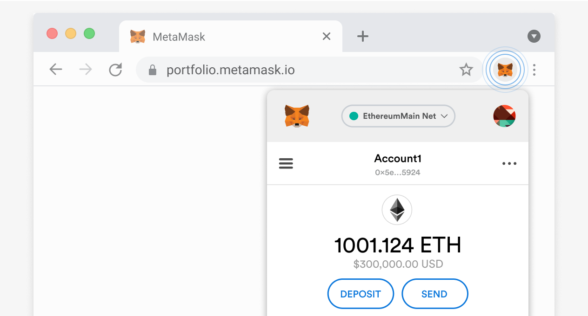
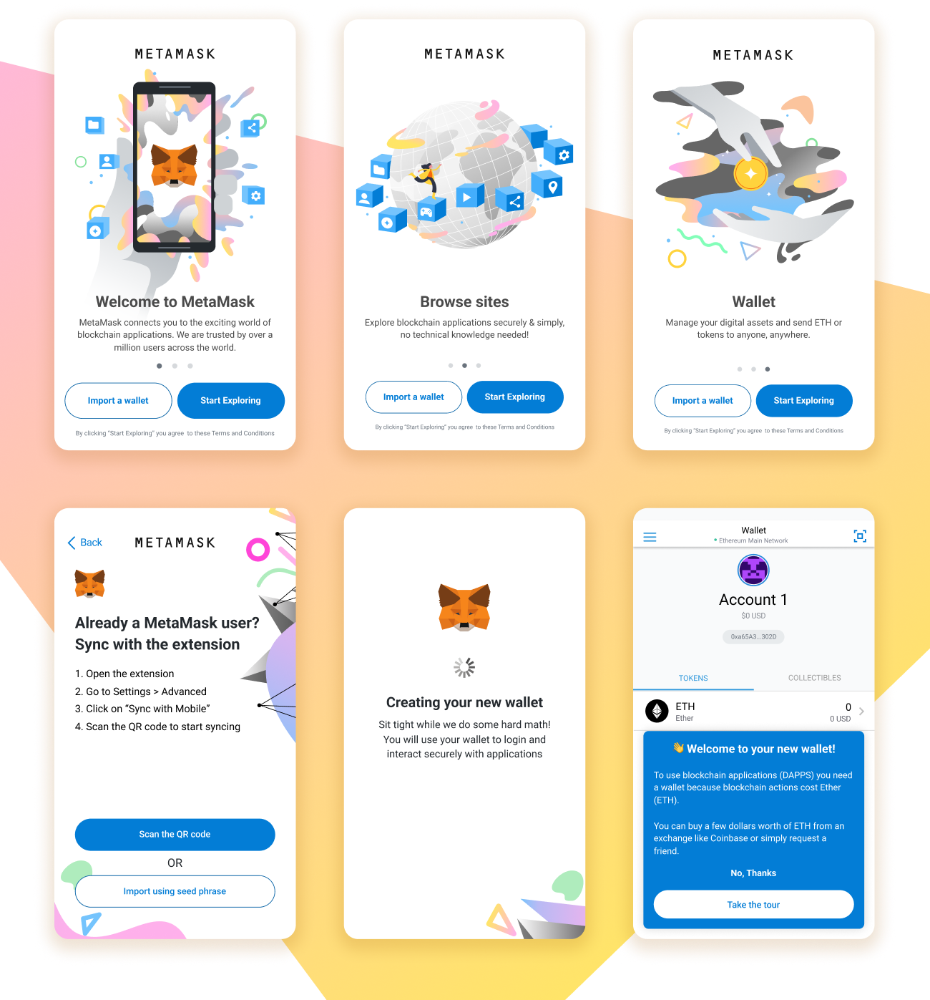
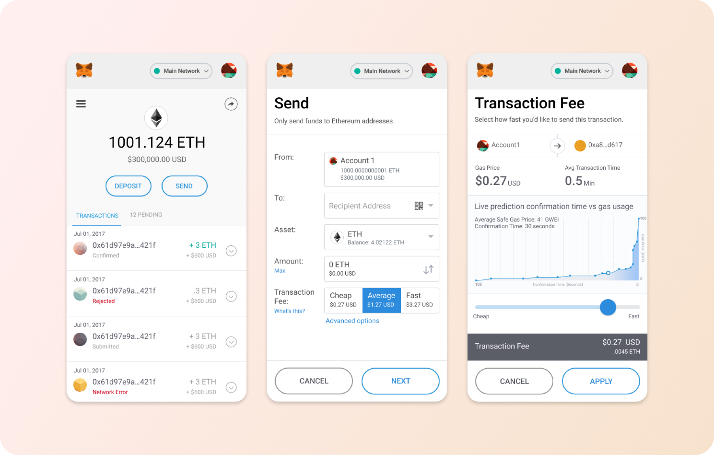
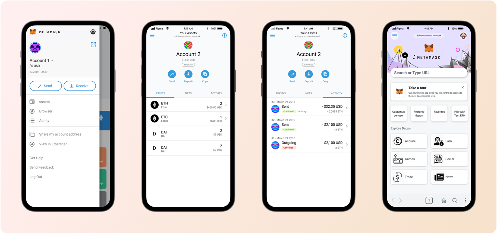
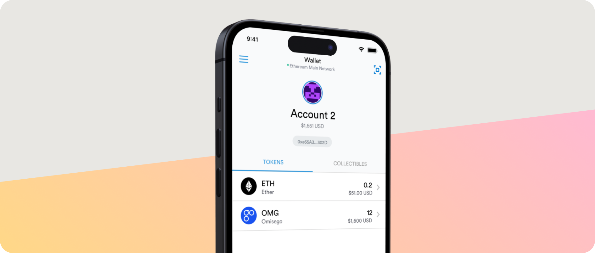

Overview
Over the course of several years at MetaMask, I helped shape the experience of one of the world's most widely used web3 products. My work spanned onboarding, wallet interactions, and decentralized app transactions, designing for both seasoned crypto users and those brand new to the space. I also created the now-iconic MetaMask fox logo and mascot, which has become a recognizable symbol of web3 itself.
Featured here is a selection of projects where I led product design and creative direction, with the goal of making decentralized technologies more intuitive, trustworthy, and accessible to millions of people worldwide.

The Problem
For most people, accessing decentralized technologies is confusing, risky, and fragmented. Managing crypto assets, connecting to decentralized apps, and navigating transactions often requires technical knowledge, unfamiliar concepts (like seed phrases, gas fees, or networks), and a high tolerance for potential errors. Without the right tools, everyday users struggle to engage with web3 safely and confidently.

The Solution
MetaMask provides a secure, user-friendly wallet and gateway to the decentralized web. It simplifies complex processes like key management, transactions, and dapp connections into clear, guided flows — empowering both newcomers and experienced users to explore, manage, and transact in web3 with confidence.


The Impact
MetaMask has become one of the most trusted and widely used wallets in web3, serving tens of millions of monthly active users worldwide. By lowering barriers to entry, it has accelerated adoption of decentralized apps and enabled everyday people, creators, and businesses to participate in the evolving decentralized economy.
